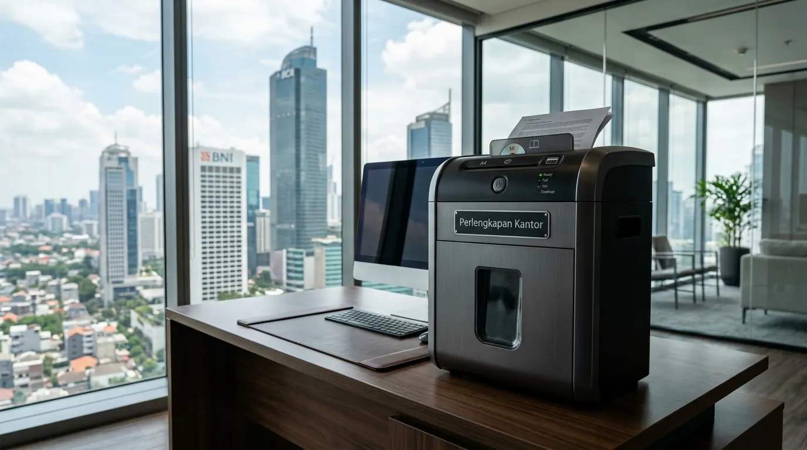

Apakah Rekomendasi Penghancur Kertas Kantor Heavy Duty Sangat Penting untuk Keamanan Data Perusahaan?
Rekomendasi penghancur kertas kantor heavy duty sangat penting untuk mencegah kebocoran data fisik serta media penyimpanan CD berkerahasiaan tinggi.
Keberadaan alat pemotong berkekuatan ekstra merupakan standar keamanan wajib bagi setiap instansi yang menangani arsip keuangan, dokumen hukum, dan rekam medis pelanggan. Dalam era digital yang rentan terhadap spionase industri, perlindungan data tidak boleh hanya berfokus pada jaringan siber, melainkan juga harus mencakup pemusnahan berkas fisik secara menyeluruh.
Pengelolaan dokumen fisik dan media digital yang kedaluwarsa menjadi salah satu pilar utama dalam sistem manajemen keamanan informasi korporat. Berdasarkan Laporan Tahunan Keamanan Cyber dan Fisik Indonesia 2025-2026, lebih dari 54 persen kasus kebocoran data perusahaan menengah disebabkan oleh pembuangan dokumen sensitif dan CD arsip tanpa proses penghancuran yang memenuhi standar.
Selain itu, Lembaga Audit Fasilitas Perkantoran 2026 mencatat bahwa penggunaan mesin pemotong kertas berefisiensi tinggi mampu mempercepat proses pemusnahan arsip hingga 65 persen dibanding metode manual.
Perusahaan yang memprioritaskan keamanan informasi memerlukan perangkat pendukung yang handal untuk menjaga integritas operasional. Selain memastikan seluruh arsip rahasia dimusnahkan secara berkala, penyediaan peralatan pendukung kerja yang memadai merupakan langkah strategis dalam membangun ekosistem kerja yang profesional.
Jika instansi Anda sedang menyusun rencana peremajaan inventaris kerja, hubungi tim kami untuk mendapatkan penawaran harga grosir terbaik untuk produk pemusnah dokumen dan Perlengkapan Kantor.
- 54% kebocoran data perusahaan terjadi akibat pembuangan dokumen fisik yang tidak aman.
- Mesin heavy duty mampu memotong hingga 25 lembar sekaligus untuk efisiensi maksimal.
- Fitur penghancur CD menjadi standar keamanan baru di tahun 2026.
Apa Saja Kriteria Utama Mesin Penghancur Kertas Heavy Duty yang Mampu Menghancurkan CD?
Kriteria utama mesin penghancur kertas heavy duty penghancur CD adalah pisau baja khusus, motor tahan panas, serta slot pemotong terpisah.

Slot pemisah untuk CD dan kartu plastik — fitur wajib mesin penghancur kertas heavy duty modern untuk keamanan data digital.
Berikut adalah kriteria teknis yang wajib diperhatikan sebelum memilih perangkat pemusnah dokumen korporat:
- Mekanisme Pisau Pemotong Baja Silinder — Menggunakan baja keras khusus yang sanggup memotong kertas beserta stepler, klip, hingga kepingan CD tebal.
- Kapasitas Lembar dan Volume Sampah — Mampu memotong minimal lima belas hingga dua puluh lima lembar kertas dalam satu kali masuk dengan wadah penampung besar.
- Sistem Operasi Nonstop (Continuous Duty) — Dilengkapi teknologi kipas pendingin internal yang memungkinkan motor bekerja terus-menerus tanpa henti.
- Fitur Keamanan Sensor Otomatis — Memiliki sensor penghenti otomatis ketika wadah penuh, pintu terbuka, atau ketika terjadi penumpukan kertas berlebih.
- Slot Pemisah Sampah CD dan Kertas — Menyediakan tempat sampah terpisah untuk limbah plastik CD dan kertas guna mempermudah daur ulang.
- Pastikan mesin memiliki garansi pisau minimal 1 tahun.
- Pilih tipe micro-cut untuk keamanan data tingkat tinggi.
- Periksa ketersediaan suku cadang dan layanan purna jual.
Bagaimana Cara Kerja Mesin Penghancur Kertas Cross-Cut dan Micro-Cut dalam Melindungi Data?
Cara kerja mesin penghancur kertas cross-cut dan micro-cut adalah memotong dokumen menjadi ribuan potongan kecil yang tidak dapat direkatkan kembali.
Tingkat keamanan mesin pemotong ditentukan oleh ukuran potongan limbah kertas yang dihasilkan. Mesin tipe strip-cut hanya memotong kertas menjadi garis lurus panjang yang masih berisiko dirangkai ulang oleh pihak yang tidak bertanggung jawab.
Sebaliknya, tipe cross-cut dan micro-cut merusak teks serta struktur fisik kertas hingga ukuran partikel sangat kecil, sehingga menjamin dokumen berharga Anda tidak dapat dibaca kembali oleh siapapun.
Penggunaan mesin pemotong berteknologi tinggi memberikan ketenangan pikiran bagi manajemen dalam menjaga kerahasiaan klien. Untuk mendukung kelancaran operasional harian perusahaan Anda secara menyeluruh, pastikan seluruh kebutuhan sarana kerja dipenuhi oleh penyedia Perlengkapan Kantor terpercaya.
- Strip-Cut — Keamanan rendah, potongan memanjang.
- Cross-Cut — Keamanan sedang, potongan konfeti kecil.
- Micro-Cut — Keamanan tinggi, potongan sangat halus seperti debu.
Apa Saja Kesalahan Umum Saat Menggunakan Mesin Penghancur Kertas Heavy Duty di Kantor?
Kesalahan umum saat menggunakan mesin penghancur kertas heavy duty adalah memasukkan kertas melebihi kapasitas dan jarang memberikan minyak pelumas pisau.
Pemaksaan memasukkan jumlah lembaran yang melebihi batas maksimal dapat membuat motor bekerja terlalu berat dan memicu kemacetan (paper jam). Selain itu, pisau pemotong baja membutuhkan perawatan berkala menggunakan oli pelumas khusus mesin penghancur kertas agar gesekan tetap halus dan pisau tidak cepat tumpul. Pengguna juga sering lupa mengosongkan wadah penampung sehingga limbah kertas menumpuk hingga ke celah pisau.
- ❌ Memasukkan kertas melebihi kapasitas maksimum.
- ❌ Tidak memberikan pelumas pisau secara rutin.
- ❌ Membiarkan wadah sampah penuh hingga meluap.
- ❌ Menghancurkan benda logam besar selain stepler/klip.
Bagaimana Tips Merawat Mesin Penghancur Kertas Agar Awet dan Tahan Lama?
Tips merawat mesin penghancur kertas adalah rutin mengoleskan minyak pelumas, mengosongkan penampung limbah, dan mengistirahatkan motor setelah penggunaan intensif.
Perawatan rutin akan memperpanjang usia pakai mesin hingga bertahun-tahun. Lakukan pelumasan pisau secara berkala dengan menumpahkan minyak khusus pada selembar kertas lalu menghancurkannya di dalam mesin. Bersihkan sensor kertas dari debu halus secara teratur menggunakan kain lap kering. Pastikan pula tegangan listrik di kantor Anda stabil agar komponen elektronik pada mesin tidak mudah rusak.
- 1. Lumasi pisau setiap 2 minggu sekali atau setiap kali wadah kosong.
- 2. Kosongkan wadah penampung sebelum mencapai 80% penuh.
- 3. Bersihkan sensor debu dengan kain kering setiap bulan.
- 4. Istirahatkan mesin selama 15 menit setiap 1 jam penggunaan berat.
Pertanyaan Populer Seputar Mesin Penghancur Kertas Kantor (FAQ)
Kesimpulan Praktis
Mendapatkan rekomendasi penghancur kertas kantor heavy duty yang sanggup menghancurkan CD merupakan solusi investasi tepat untuk menjaga kerahasiaan arsip dan informasi penting perusahaan. Dengan memilih mesin yang memiliki kapasitas potong tinggi, fitur pendingin otomatis, dan tingkat pemotongan aman, proses pemusnahan dokumen dapat berjalan cepat serta efisien.
Lengkapi keamanan dan produktivitas sarana kerja Anda dengan memesan paket Perlengkapan Kantor dari toko kami sekarang juga untuk mendapatkan promo harga khusus korporat!

Penulis: Ardhana Prasasta
Spesialis konten & konsultan furnitur tata ruang kantor di Perlengkapan Kantor. Berpengalaman dalam memberikan panduan solusi ergonomis, efisiensi ruang kerja, dan pengadaan perlengkapan kantor korporat.